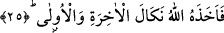

Şu “ene/ben” demede ise Allah’ın rahmeti var
Zira o siyah bir taş idi bu ise akîk
O nûrun düşmanıydı, bu ise âşık
Ey fuzûl! Şu “ene/ben” sırda “hüve/O” demekti
Nûrun birleşmesindendi, hulûl gibi değildi.
Es’iletü’l-Hikem isimli eserde deniyor ki: Eğer birisi çıkıp da: “İblisin rablık iddiâ
etmediği halde lânete uğramasının, Fir’avn gibilerin ise rablık iddiâ ettikleri halde
ta’yînen ve tahsîsen iblisin uğradığı gibi lânete uğramamalarının sebebi nedir” diye
soracak olursa biz bu soruya şöyle cevap veririz: İblisin niyeti Fir’avn gibi insanların
niyetlerinden daha kötü idi. Bazı âlimlere göre iblisin lânete uğraması, yaratıklar
içerisinde kavl, fiil ve niyet ayrılığı icad edenin kendisi olmasından dolayıdır. Ondan
sonraki insanlar rablık iddiâsında bulunmuşlar ve iblisin vesvesesi sebebiyle taşkınlığı
ve ihtilafı yol edinmişlerdir. Sonra iblis muhalefeti ile Hak Teâlâ’ya karşı gelmiştir.
Oysa Fir’avn ve diğerleri peygamberlere ve vâsıtalara karşı gelmişler, zaman zaman
Allah’a yakarmış, başka insanların huzurunda günahlarını itiraf etmişlerdir. Oysa iblis
ne günahını itiraf etmiş, ne de Allah’a yakarmıştır. Yeryüzünde küfrü ilk îcâd eden de
iblis olmuştur. Ondan sonraki kâfirlerin günahlarının bir misli de kıyamete kadar iblisin
boynunadır. Yeryüzünde sapıklığı ve azgınlığı vâsıtasız olarak tek başına ortaya çıkaran
iblis olmuştur.
25. Allah onu, (her kese ibret olarak) dünya ve âhiret azabıyla cezâlandırdı.
Zikredilen bu nedenlerden dolayı “Allah onu dünya ve âhiret azabıyla
cezâlandırdı.” Âyetteki “nekâl” tenkil mânâsınadır. Tıpkı selâm kelimesinin teslim
mânâsına olduğu gibi. Nekâl’in anlamı ise “azab verme”dir. Ancak bu azab, onu gören
ve işitene ibret veren, böyle bir azaba götürücü fiilleri yapmasına engel olan bir azab
çeşididir. Buna göre âyet-i kerimede sanki şöyle denmiş olmaktadır: Allah onu dünya ve
âhiret azabıyla cezâlandırdı. Bu cezâ âhirette yakma, dünyada ise suda boğma
şeklindedir. “Cezalandırdı” anlamına gelen “ahaze” kelimesi mecâzî anlamda
kullanılmış olup, hem dünyadaki cezâya hem de âhiretteki cezâya şâmildir. Bu
kullanımın mecâzî olduğunu söylemeseydik, bir kelimenin bünyesinde hem gerçek ve
hem de mecâzî anlam birleşmiş olurdu. Çünkü cezâlandırmanın “dünyevi cezâlandırma”
şeklindeki kullanımı hakikattir. “Uhrevi cezâ” şeklindeki kullanımı ise mecâzîdir. Zira
dünya açısından bu cezâ gerçekleşmiştir, âhiret açısından ise gerçekleşecektir. Söz
konusu cezânın hem dünyaya ve hem de âhirete nisbet edilmesi, cezâlandırma fiilinin
ikisinde de vuku bulacağı itibariyledir. Yoksa ibret verici ve engelleyici cezânın hem